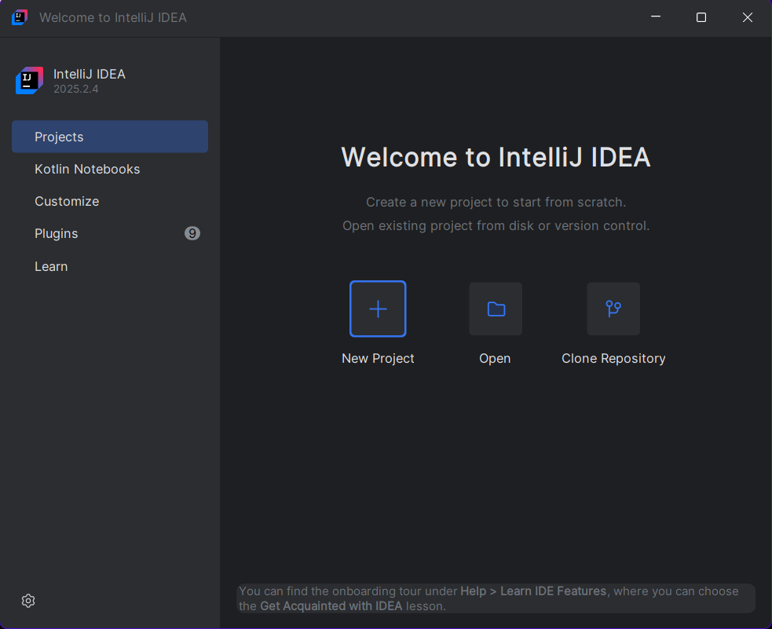
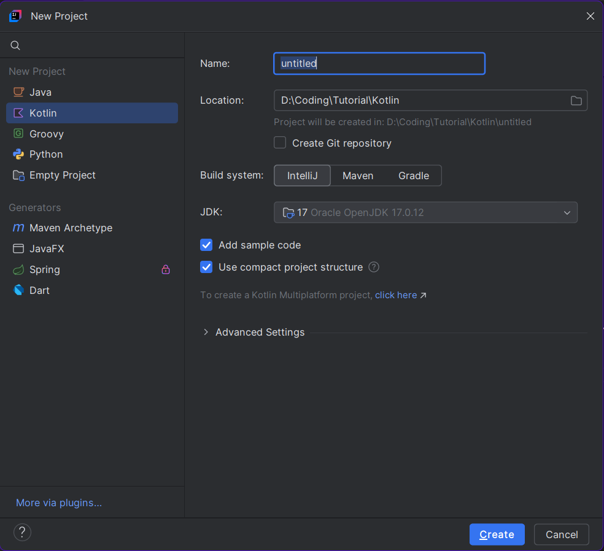
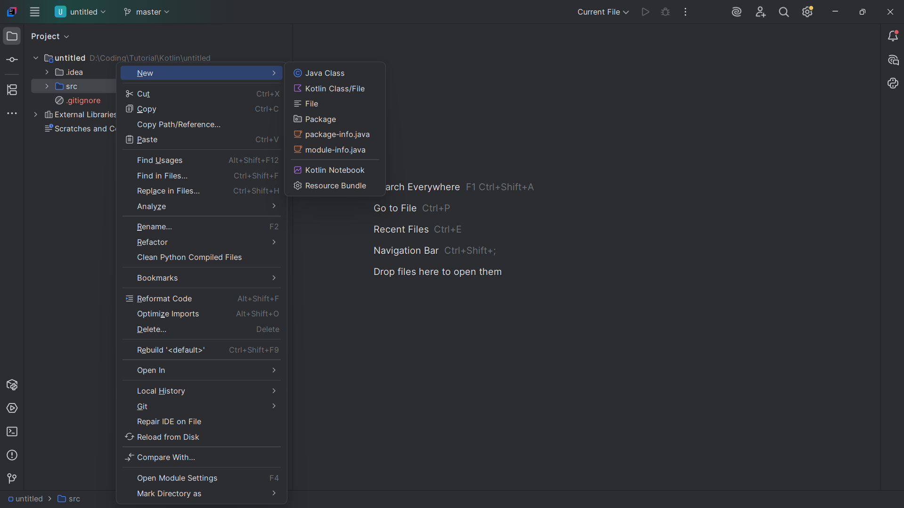
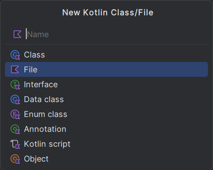

Kotlin is a modern programming language developed by JetBrains, the company behind IntelliJ IDEA. Work on Kotlin began in 2010, and the language was officially released in 2016 as a concise, expressive, and safer alternative to Java. One of Kotlin’s biggest advantages is its full interoperability with Java, allowing developers to use existing Java libraries and frameworks seamlessly.
In 2017, Google announced official support for Kotlin on Android, and in 2019 it became the preferred language for Android app development. Kotlin primarily targets the Java Virtual Machine (JVM), but it also supports JavaScript and native compilation through Kotlin/JS and Kotlin/Native, making it a versatile cross-platform language for modern software development.
To start, first we need to install the Kotlin compiler and an IDE to write. Here are the links,
Kotlin compiler download page: Download Kotlin Language Compiler (Not needed if you are installing IntelliJ)
IntelliJ IDE installation page(recommended): Download IntelliJ IDE(By JetBrains) (Ideal and dedicated IDE for Kotlin)
VS code installation page(optional): Download Visual Studio Code(By Microsoft) (Optional, only if you want a lightweight multi-purpose IDE)
To start, to need to create a project in the IntelliJ. First, open IntelliJ IDE. You will see a screen like this,

Click on the "New Project" button. After that You will see this screen.

Name it whatever you like and select a path you want. Uncheck the "Add Sample Code" option, or you can keep it. But I'd recommend uncheking it. Current latest JDK is 17(07-12-2025), if it upgrades, change it accordingly. Just keep the latest JDK. Then click the "Create" button at the bottom. Now your project is ready. Now, if you unchecked the "Add Sample Code option, then there is one final task. After the project opens, you will see a folder named "src". Right click on the folder and hover over "new".

You will see many option, select the "Kotlin Class/File" option. Now it will open up a window like this,

Select the file, and give it a name. Now your Kotlin file is created. You can also do it by selecting "File" instead of "Kotlin Class/File" and giving it a extention '.kt' to create a Kotlin file. Now the setup is complete, and you are ready to write Kotlin code.
Unlike languages like Python, JavaScript or Ruby, Kotlin requires a entrypoint. A entrypoint is a function or a class from where the compiler starts to execute the codes. It will only run the codes inside the entrypoint. Just like C, C++ or Dart, Kotlin's entry point is,
fun
main
()
{....}
And we will write codes inside this function.
Like every other High-Level Programming Languages, Kotlin has a print statement. The syntax is like this,
println
(
"Hello World!"
)
Point to remember, Kotlin Doesn't use ';' (SemiColon). It won't throw an error if you put one, but it just ignores it.